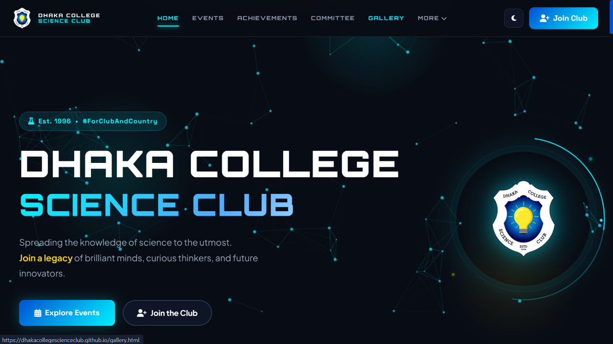
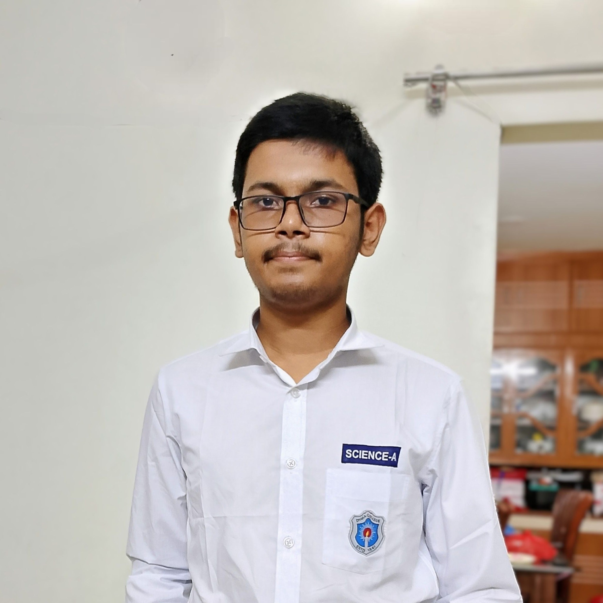
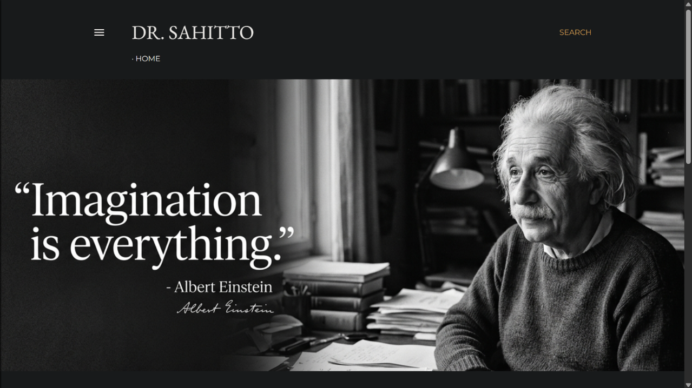
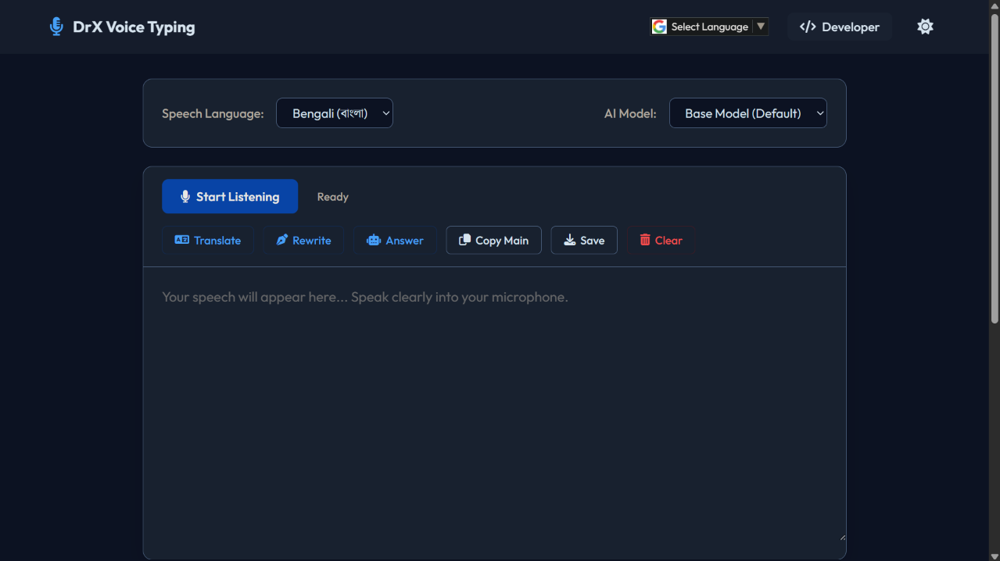
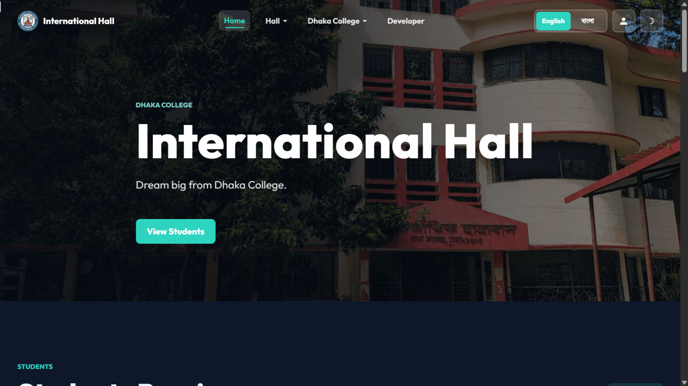

<achievements>
awards, leadership, honors & milestones of Abdullah Al Adib

Official web architect for Dhaka College Science Club, connecting student scientists with modern digital resources.

Academic excellence in secondary science, building strong analytical foundations and securing entry to Dhaka College.

Established a digital Bengali literature ecosystem blending philosophy, essays, and creative poetry.

Top honor in Quran recitation competition, blending ethical discipline with technical intellect.

Bilingual speech-to-text converter designed for high-speed Bengali and English typing and note taking.

Centralized information and notice directory solving residential student communication needs on campus.
Mastered core computational logic, memory architecture, and procedural programming fundamentals.